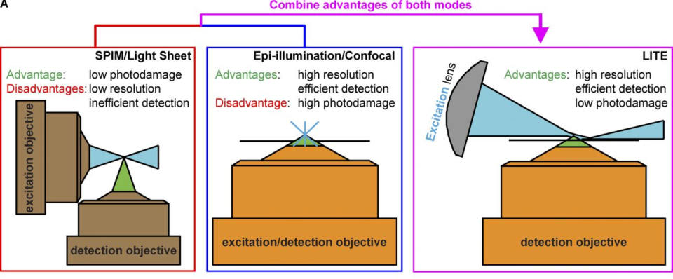
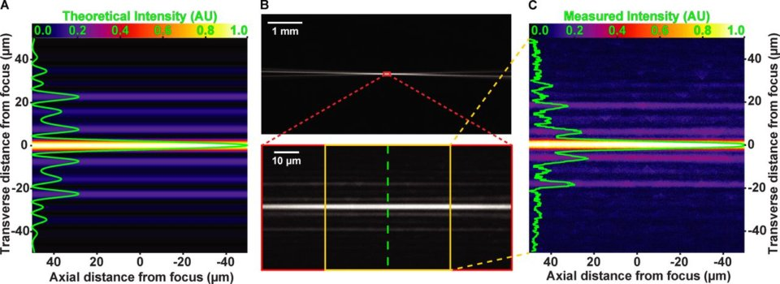

Novel Light Sheet geometry
Can use Oil immersion objective
We achieved this goal by using a tilted sheet that can access the working distance of high-NA, oil- and water-immersion objective lenses, including a 60× 1.49-NA oil-immersion objective that accepts 88% more emitted fluorescence and offers a 26% increase in native lateral resolution compared with a 25× 1.1-NA water-dipping objective.
Light Sheet Characterization
- Sheet Width: 4.5μm
- Side lobes "too low intensity to generate signal"
From the discussion:
Although the LITE sheet measured 4.3 μm thick FWHM , in actual cellular imaging conditions, it behaved as if it were thinner. Because of the complexities of cells, this phenom- enon is difficult to measure and is best illustrated by the obser- vation that focusing the detection objective (without moving the sheet) by ∼ 1 μm resulted in being outside the excitation volume. Although we have no experimental evidence for this observation, it is conceivable that, given the sheet has a Gaussian intensity profile, only the very peak of the focal volume contains a photon density adequate for fluorophore excitation.
Hela cells Hec1-EGFP
Ashbya gossypii cell expressing H4-GFP